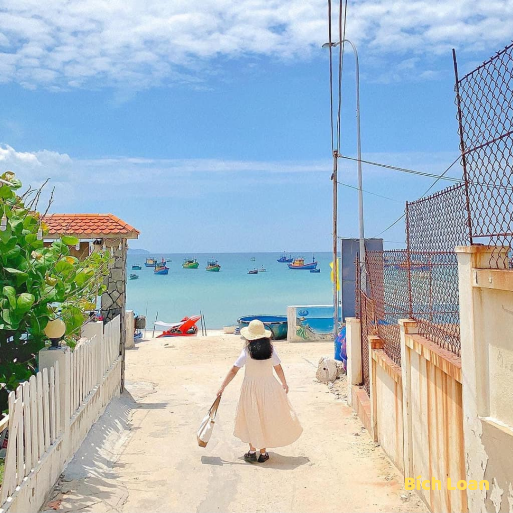
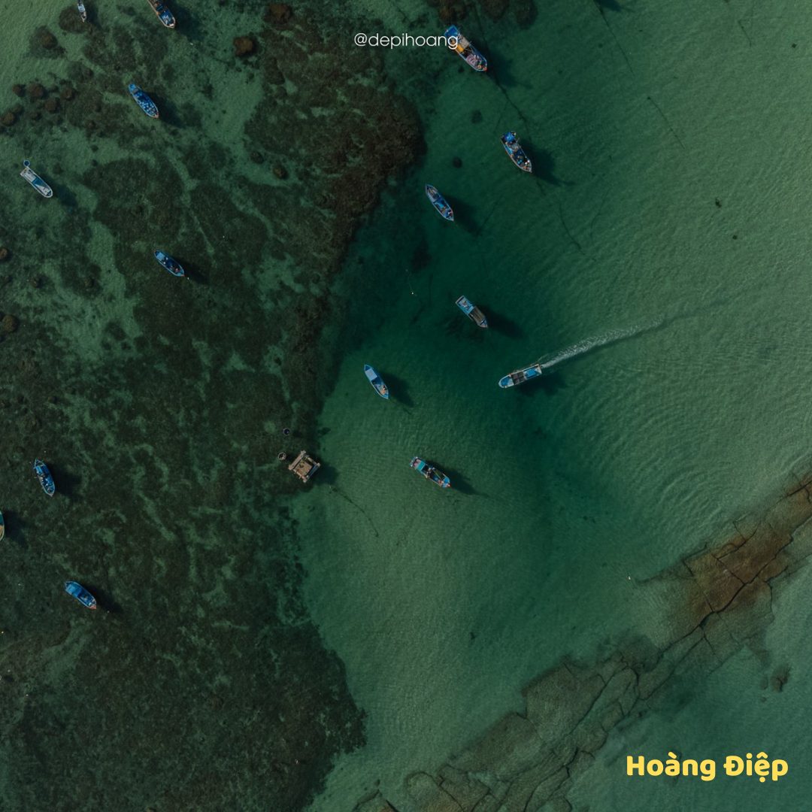
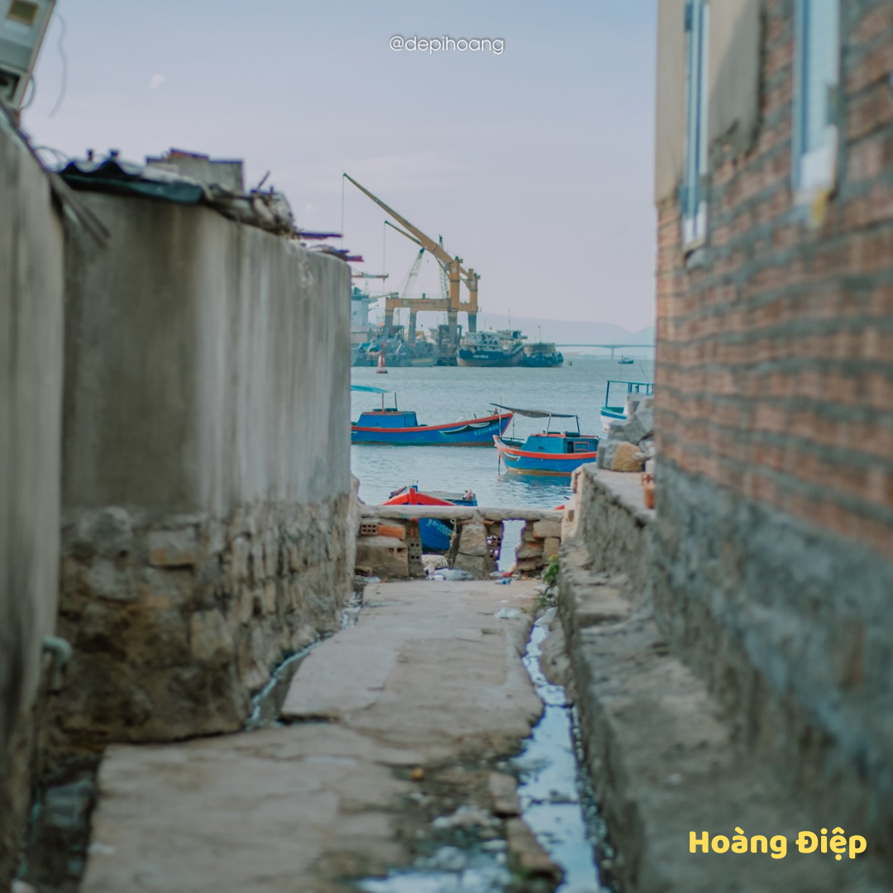

LỊCH SỬ
VĂN HÓA
DU LỊCH
1799 – 1802
Thành Quy Nhơn bị quân Nguyễn Ánh chiếm đóng và đổi làm thành Bình Định
1814
Vua Gia Long cho xây dựng lại thành Bình Định mới. Sau khi xây xong cho chuyển toàn bộ nhà cửa về thành mới này
1913
Thực dân Pháp sát nhập Phú Yên vào Bình Định cho tới 1921
1976
Hợp nhất tỉnh ở miền Nam Việt Nam theo đó hai tỉnh Quảng Ngãi và Bình Định hợp nhất thành tỉnh Nghĩa Bình.
1989
Bình Định tách ra từ tỉnh Nghĩa Bình để tái lập lại tỉnh và kéo dài như vậy cho đến nay
hát tuồng
Ca kịch bài chòi
lễ hội đua thuyền truyền thống
rượu bầu đá
võ học cổ truyền
  